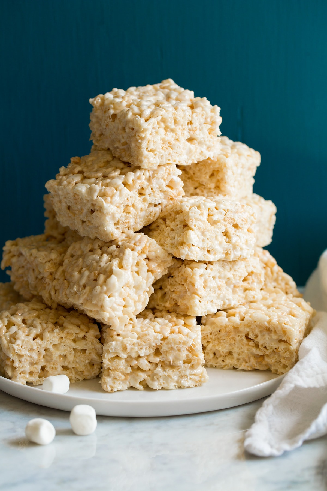

Brown Butter Rice Krispie Treats

Description
The best rice krispies ever. The brown butter gives it a nice nutty flavor.
Ingrediants
- 1 Box Family Size Rice Krispies
- 2 12 Ounce Bags Regular Sized Marshmallows
- 2 Sticks of Unsalted Butter
Steps
- Melt the butter over low flame until the butter browns and has a nutty aroma. About 5-10 minutes
- Once the butter is nicely browned add the marshmallows and a 1/2 teaspoon of table salt.
- Mix the marshmallows for about 5 minutes until they are melted and you can see the brown flecks throughout.
- Take off heat and pour in the rice krispies and mix to combine.
- Pour into a 9x13 baking dish that has been well oiled.
- Flatten and push into the sides and corners of the dish.
- Let cool slighly and then serve.